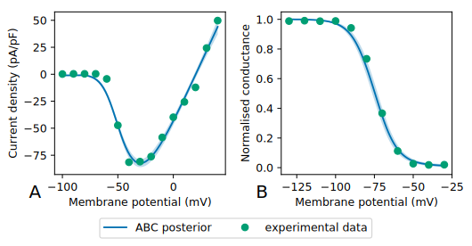
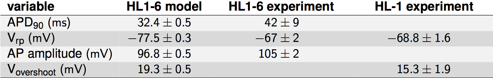
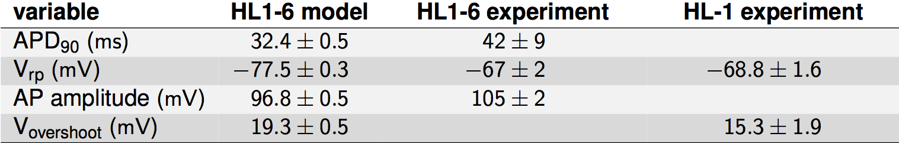

Constructing an action potential model:
it's easy as ABC?
Charles Houston (cph211@ic.ac.uk)
5 Sep 2017
Towards a discrete-cell model framework
Action potential mathematical models
Hypothesis
The ABC approach can be used to construct a validated mathematical model of the action potential of HL1-6 while taking into account uncertainties in parameter estimates from insufficient fitting data, biological variability and/or parameter redundancy.
Aims
- Develop an ABC implementation to estimate parameter posterior distributions for individual ion currents.
- Investigate sources of uncertainty and unidentifiability in parameter estimates.
- Construct the full action potential model and validate with experimental data.
Approximate Bayesian Computation

Model Overview

Fast Na+ current
A = activation, B = inactivation
Rapid delayed-rectifier K+ current

A = activation, B = tail current
T-type Ca2+ current

A = activation, B = inactivation, C = recovery
Steady-state and temporal variables
- ABC could not constrain temporal variables with available patch clamp data.

A = steady-state variables, B = activation temporal variable, C = inactivation temporal variable
Identifiability analysis
- Distributions almost unchanged from uniform prior.
- Suggests practical unidentifiability.

Full action potential model
- Each simulation run draws from ABC posterior.
- Automaticity in 56% of runs (n = 200).
- Natural firing rate comparable with experiments.
ABC enables uncertainty quantification
 

Conclusions
- ABC is an effective approach to infer model parameters while accounting for uncertainties.
- Voltage patch clamp data is not sufficient to completely constrain ion current parameters.
- The full action potential model reproduces qualitative and quantitative characteristics of the HL1-6 myocyte.